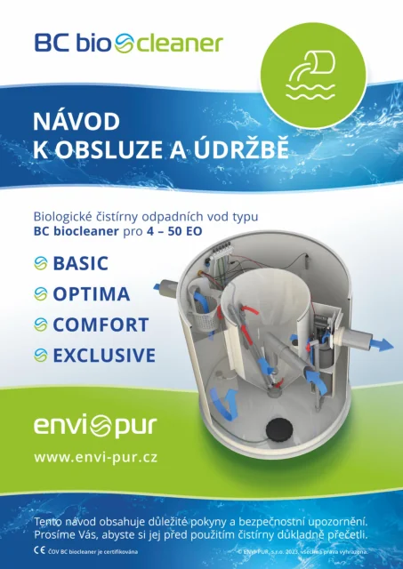
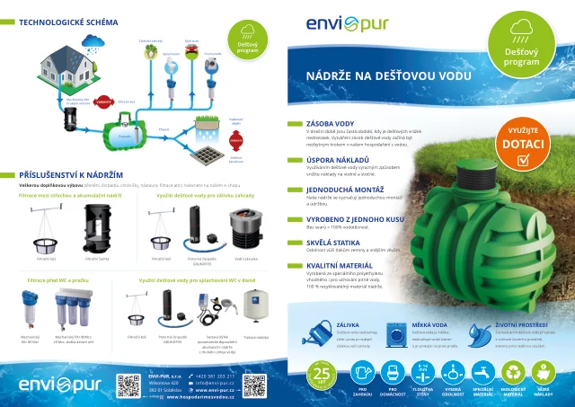
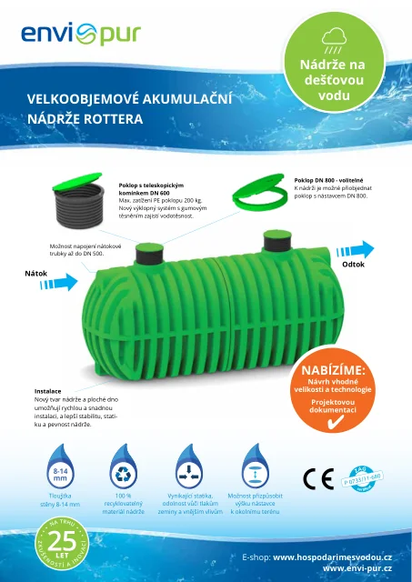

PDFNávod k obsluze / 6.2 MB
Dokumenty
Prohlédněte si návody, technické informace a přehledy technologií. Každý dokument můžete rovnou otevřít nebo stáhnout.
5 původních PDF dokumentů
PDFNávod k obsluze / 6.2 MB
 PDF
PDF Prohlášení o vlastnostech / 517 kB
 PDF
PDF 
PDF
PDFTakový dokument jsme nenašli. Zkuste jiný název nebo oblast.
Napište nám, jakou technologii řešíte. Pomůžeme vám vybrat další postup.